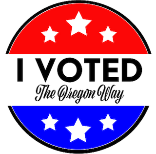

In 1998, we overwhelmingly voted to expand mail-in voting to primary and general elections. Two years later, Oregon became the first state in the U.S. to conduct a presidential election with mail-in voting. Voter turnout was a whopping 79% that year!!
Registered voters in Oregon receive their ballot automatically to their registered address. Hence, it's very important to update your voter registration every time you move!
Ballots need to be returned by a fixed deadline in order to have it counted. A voter may be able to return the ballot in person at an official election drop-box or by mail.
Counting entails the actual tabulation of votes.
Election officials must first process the ballots before they can be counted. Processing generally entails verifying voter signatures and physically preparing ballots for tabulation. Processing practices can vary widely from state to state. Counting entails the actual tabulation of votes.